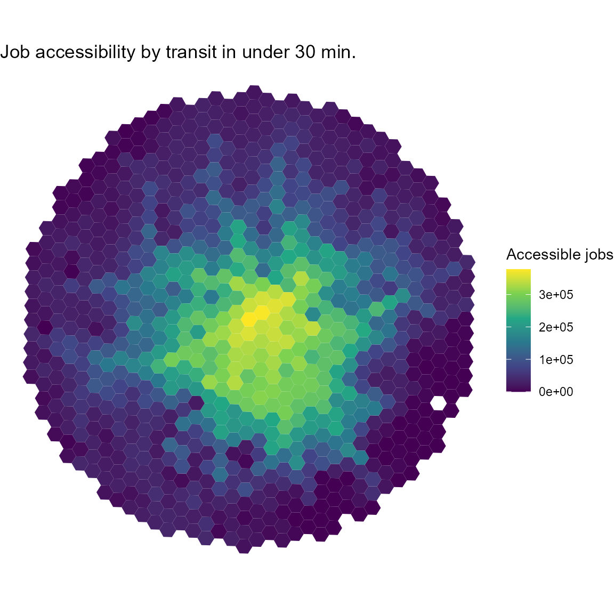

vignettes/accessibility.Rmd
accessibility.Rmdaccessibility is an R package that offers a set of fast and convenient functions to calculate multiple transport accessibility measures. Given a pre-computed travel cost matrix and a land use dataset, the package allows one to calculate active and passive accessibility levels using multiple accessibility metrics, such as cumulative opportunities (using either a travel cost cutoff or a travel cost interval), minimum travel cost to closest N number of activities, gravitational measures and different floating catchment area methods. This vignette briefly overviews the package with a few reproducible examples.
Before using accessibility please make sure that you have it installed in your computer. You can download either the most stable version from CRAN…
install.packages("accessibility")…or the development version from GitHub.
# install.packages("remotes")
remotes::install_github("ipeaGIT/accessibility")As of the time of writing this vignette, the accessibility package includes five different functions to calculate accessibility:
cost_to_closest() - calculates the minimum travel cost
to the closest n number of opportunities.cumulative_cutoff() - calculates the frequently used
threshold-based cumulative opportunities measure.cumulative_interval() - calculates accessibility as the
median/mean (or any other summary measure, really) number of
opportunities that can be reached within a cost interval.gravity() - calculates gravity-based accessibility,
taking a decay function specified by the user (more on that in a few
paragraphs).floating_catchment_area() - calculates accessibility
taking into account the effects of competition for opportunities with
different floating catchment area measures.You may have noticed that we’ve mentioned a few times that the functions calculate accessibility using travel cost, and not travel time. That’s because we’re treating costs here in its generic sense: anything that increases the impedance from an origin to a destination, such as travel time, monetary costs, distances, risk perception, etc., can be considered a generic cost.
The gravity() and floating_catchment_area()
functions can use different decay functions when estimating
accessibility levels. These decay functions effectively weigh the number
of opportunities in a destination by a factor that depends on the travel
cost between the origin and the destination. For convenience, the
package currently includes the following decay functions:
decay_binary() - binary decay function (the one used in
cumulative opportunities measures).decay_exponential() - negative exponential decay
function.decay_linear() - linear decay function (weights decay
linearly from 1 to 0 until a specific travel cost cutoff is
reached).decay_power() - inverse power decay function.decay_stepped() - stepped decay function (similar to
decay_binary(), but can take an arbitrary number of steps,
instead of a single one).The users can also specify their own custom decay functions, if they need to use functions currently not included in the package. For more details on this, please read the decay functions vignette.
Enough talking. Let’s demonstrate some of the key features of the package. First we’ll need to load the libraries we’ll be using:
To use accessibility, you will need a pre-computed
travel cost matrix and some land use data (e.g. location of jobs,
healthcare, population, etc.). As mentioned before, travel costs can be
presented in terms of travel times, distances or monetary costs, for
example. This dataset must be structured in a data.frame
containing, at least, the columns from_id,
to_id and the travel cost between each origin-destination
pair.
Your data should look similar to this sample dataset with public transport travel times for the city of Belo Horizonte, Brazil, included in the package for demonstration purposes1.
data_dir <- system.file("extdata", package = "accessibility")
travel_matrix <- readRDS(file.path(data_dir, "travel_matrix.rds"))
head(travel_matrix)
#> from_id to_id travel_time
#> 1: 89a88cdb57bffff 89a88cdb57bffff 5.8
#> 2: 89a88cdb57bffff 89a88cdb597ffff 47.0
#> 3: 89a88cdb57bffff 89a88cdb5b3ffff 48.0
#> 4: 89a88cdb57bffff 89a88cdb5cfffff 47.0
#> 5: 89a88cdb57bffff 89a88cd909bffff 64.0
#> 6: 89a88cdb57bffff 89a88cd90b7ffff 59.0The land use data must also be structured in a
data.frame and must contain an id column,
referring to the ids listed in the travel matrix, and the number of
opportunities/facilities/services in each spatial unit. The sample
dataset we’ll be using looks like this:
land_use_data <- readRDS(file.path(data_dir, "land_use_data.rds"))
head(land_use_data)
#> id population jobs schools income_per_capita income_decile
#> 1: 89a881a5a2bffff 381 180 0 22369.1 10
#> 2: 89a881a5a2fffff 269 134 0 3205.1 9
#> 3: 89a881a5a67ffff 929 143 0 11394.0 10
#> 4: 89a881a5a6bffff 249 61 0 3659.8 9
#> 5: 89a881a5a6fffff 176 11 0 4905.1 10
#> 6: 89a881a5b03ffff 681 1071 0 2200.2 8cost_to_closest() calculates the minimum travel cost to
a given number of opportunities. Much like the other functions we’ll be
demonstrating in this section, it takes as inputs the travel matrix and
land use datasets, the name of the column in the latter with the
opportunities to be considered and the name of the column in the former
with the travel cost to be considered. Additionally, it takes the
minimum number of opportunities to be considered. Here’s how calculating
the time from each origin in Belo Horizonte to the closest school looks
like:
mtc <- cost_to_closest(
travel_matrix,
land_use_data,
opportunity = "schools",
travel_cost = "travel_time",
n = 1
)
head(mtc)
#> id travel_time
#> 1: 89a881a5a2bffff 29
#> 2: 89a881a5a2fffff 24
#> 3: 89a881a5a67ffff 28
#> 4: 89a881a5a6bffff 33
#> 5: 89a881a5a6fffff 32
#> 6: 89a881a5b03ffff 17cumulative_cutoff() calculates the traditional
cumulative opportunities measure, indicating the number of opportunities
that are accessible within a given travel cost threshold. In this
example, we estimate how many jobs can be reached from each origin with
trips taking up to 30 minutes of travel time.
cum_cutoff <- cumulative_cutoff(
travel_matrix,
land_use_data,
opportunity = "jobs",
travel_cost = "travel_time",
cutoff = 30
)
head(cum_cutoff)
#> id jobs
#> 1: 89a881a5a2bffff 14561
#> 2: 89a881a5a2fffff 29452
#> 3: 89a881a5a67ffff 16647
#> 4: 89a881a5a6bffff 10700
#> 5: 89a881a5a6fffff 6669
#> 6: 89a881a5b03ffff 37029Let’s say that we wanted to, instead, calculate passive
accessibility - i.e. by how many people each destination can be reached
within a given travel cost. Doing so requires very few changes to the
call: just change the “opportunity” column to "population"
and set active (TRUE by default) to
FALSE.
passive_cum_cutoff <- cumulative_cutoff(
travel_matrix,
land_use_data,
opportunity = "population",
travel_cost = "travel_time",
cutoff = 30,
active = FALSE
)
head(passive_cum_cutoff)
#> id population
#> 1: 89a881a5a2bffff 11053
#> 2: 89a881a5a2fffff 31903
#> 3: 89a881a5a67ffff 12488
#> 4: 89a881a5a6bffff 14474
#> 5: 89a881a5a6fffff 15053
#> 6: 89a881a5b03ffff 69582The active parameter is available in most other
accessibility functions as well (with the exception of
floating_catchment_area()), making it very easy to
calculate both active and passive accessibility.
cumulative_time_interval() calculates the interval-based
cumulative opportunities measure. This measure, developed by (tomasiello2022time?),
mitigates the impacts of arbitrary choices of cost cutoffs, one of the
main disadvantages of the traditional threshold-based cumulative
opportunities measure. Given a cost interval, it calculates several
accessibility estimates within the interval and summarizes it using a
user-specified function. In the example below, we calculate the average
number of accessible jobs considering multiple minute-by-minute time
thresholds between 40 and 60 minutes.
cum_interval <- cumulative_interval(
travel_matrix = travel_matrix,
land_use_data = land_use_data,
opportunity = "jobs",
travel_cost = "travel_time",
interval = c(40, 60),
summary_function = base::mean
)
head(cum_interval)
#> id jobs
#> 1: 89a88cdb57bffff 311965
#> 2: 89a88cdb597ffff 249416
#> 3: 89a88cdb5b3ffff 302515
#> 4: 89a88cdb5cfffff 373386
#> 5: 89a88cd909bffff 308429
#> 6: 89a88cd90b7ffff 344118gravity() calculates gravity-based measures -
i.e. measures in which the weight of opportunities is gradually
discounted as the travel cost increases. Of course, several different
decay functions can be used to so, each one of them with a range of
possible different parameters. In order to accommodate such
generalization, the function takes the decay function to be used as a
parameter.
In the example below, we calculate accessibility using a negative
exponential function with a decay_value (usually referred
as the in its formulation) of 0.2. Please see the vignette on decay functions for more
information on the decay functions shipped with the package and how to
use custom functions.
negative_exp <- gravity(
travel_matrix,
land_use_data,
opportunity = "schools",
travel_cost = "travel_time",
decay_function = decay_exponential(decay_value = 0.2)
)
head(negative_exp)
#> id schools
#> 1: 89a88cdb57bffff 0.03041853
#> 2: 89a88cdb597ffff 1.15549493
#> 3: 89a88cdb5b3ffff 0.56519126
#> 4: 89a88cdb5cfffff 0.19852152
#> 5: 89a88cd909bffff 0.41378042
#> 6: 89a88cd90b7ffff 0.95737555floating_catchment_area() calculates accessibility
accounting for competition of resources using different floating
catchment area (FCA) methods. The FCA family includes several different
methods, which can be specified using the method parameter.
As of the time of writing this vignette, the package supports two
different methods:
"2sfca") - the first
metric in the FCA family, originally proposed by Luo and Wang (2003)."bfca") - takes
competition affects into account while correcting for issues of
inflation of demand and service levels. Originally proposed by Paez, Higgins, and Vivona (2019) and named in
Pereira et al. (2021).Please note that, since FCA measures consider competition effects, we
have to specify which column in the land use dataset represents the
population competing for opportunities with the demand
parameter. The function also supports different decay functions. In the
example below, we calculate accessibility to jobs using the BFCA method,
considering that the entire population of the city compete for these
jobs and using a negative exponential decay function.
bfca <- floating_catchment_area(
travel_matrix,
land_use_data,
opportunity = "jobs",
travel_cost = "travel_time",
demand = "population",
method = "bfca",
decay_function = decay_exponential(decay_value = 0.5)
)
head(bfca)
#> id jobs
#> 1: 89a88cdb57bffff 0.10280082
#> 2: 89a88cdb597ffff 0.30930287
#> 3: 89a88cdb5b3ffff 0.07288551
#> 4: 89a88cdb5cfffff 0.09759117
#> 5: 89a88cd909bffff 0.07390234
#> 6: 89a88cd90b7ffff 1.22525579spatial_availability() also calculates accessibility
considering competition effects, though using the spatial availability
measure proposed by Soukhov et al. (2023).
The results from this metric are proportional both to the demand in each
origin and the travel cost it takes to reach the destinations. As with
the FCA function, we have to specify the column in the land use dataset
that contains the population competing for opportunities and we can use
different decay functions to calculate the impedance between
origin-destination pairs.
spatial_avlblt <- spatial_availability(
travel_matrix,
land_use_data,
opportunity = "jobs",
travel_cost = "travel_time",
demand = "population",
decay_function = decay_exponential(decay_value = 0.1)
)
head(spatial_avlblt)
#> id jobs
#> 1: 89a88cdb57bffff 186.0876
#> 2: 89a88cdb597ffff 140.0738
#> 3: 89a88cdb5b3ffff 736.5830
#> 4: 89a88cdb5cfffff 900.9284
#> 5: 89a88cd909bffff 0.0000
#> 6: 89a88cd90b7ffff 204.7962balancing_cost() calculates the balancing cost
accessibility measure. Originally proposed by Barboza et al. (2021) under the name “balancing
time”, this metric is defined as the travel cost required to reach as
many opportunities as the number of people in a given origin. Just like
the previous two functions, balancing_cost() also includes
a parameter to specify the population competing for opportunities.
The function also includes a cost_increment parameter,
that should be used to specify the increment that defines the travel
cost distribution from which the potential balancing costs will be
picked. For example, an increment of 1 (the default) tends to suit
travel time distributions, meaning that the function will first check if
any origins reach their balancing cost with a travel time of 0 minutes,
then 1 minute, 2 minutes, 3, 4, …, etc. On the other hand, an increment
of 1 might be too big for a distribution of monetary costs, which could
possibly benefit from a smaller increment of 0.05 (5 cents), for
example. Such increment results in the function looking for balancing
costs first at a monetary cost of 0, then 0.05, 0.10, …, etc. In the
example below, we use the default cost increment of 1.
bal_cost <- balancing_cost(
travel_matrix,
land_use_data,
opportunity = "jobs",
travel_cost = "travel_time",
demand = "population"
)
head(bal_cost)
#> id travel_time
#> 1: 89a881a5a2bffff 15
#> 2: 89a881a5a2fffff 13
#> 3: 89a881a5a67ffff 23
#> 4: 89a881a5a6bffff 7
#> 5: 89a881a5a6fffff 10
#> 6: 89a881a5b03ffff 6If you have the spatial data of your origins/destinations, you can easily merge it with the accessibility to create spatial visualizations of the results. The example below quickly shows how to create a simple map using ggplot2.
grid <- system.file("extdata/grid_bho.rds", package = "accessibility")
grid <- readRDS(grid)
spatial_data <- merge(grid, cum_cutoff, by = "id")
ggplot() +
geom_sf(data = spatial_data, aes(fill = jobs), color = NA) +
labs(
title = "Job accessibility by transit in under 30 min.",
fill = "Accessible jobs"
) +
scale_fill_viridis_c() +
theme_void()
If you would like to calculate such travel cost matrices yourself, there are several computational packages to do that in R, such as r5r, dodgr, gtfsrouter, hereR and opentripplanner.↩︎